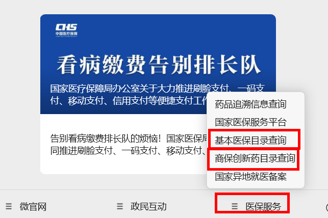
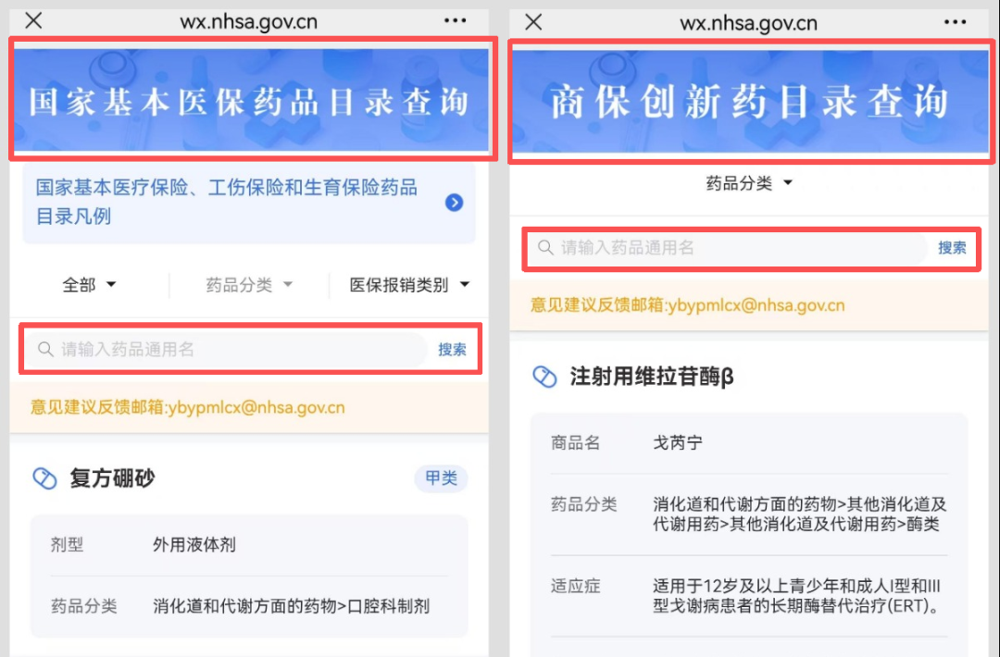
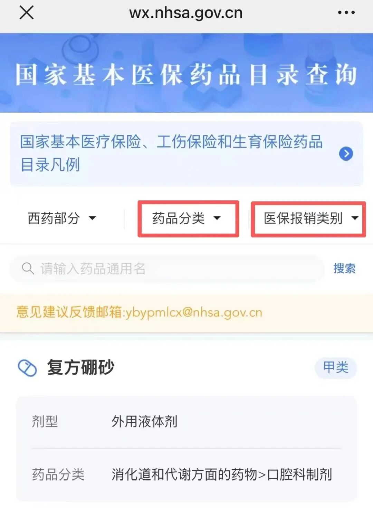

如何快速查询药品目录（社保+商保）
如何可以快速地查询医保和商保药品呢？简单三步教你！
哪些药品能报销
如何查询目录内的药品信息
第一步
关注国家医保局微信公众号
点击下方菜单栏医保服务

选择基本医保目录查询
或商保创新药目录查询
进入相应查询页面
第二步
输入药品通用名
点击搜索即可查看该药品是否
在目录内
所属分类
报销类别（医保目录）
或商保创新药目录相关信息
因为商保创新药种类比较少
19种已经全部展示了
也可以根据自己的需求，
按照药品分类或医保报销类别
进行筛选查找

你学会了吗
本文由 ShawnCH（何智翔）轉發，透過微信聊天記錄自動提取並整理。 原文連結：https://mp.weixin.qq.com/s?__biz=MzAwOTg0OTU1MQ==&mid=2651317644&idx=1&sn=f1381a1e9d04c731a6cc03e43a924d6d&chksm=815d30971d2ea414fef8d45ced8772883ca1322e37342090c482bc705b16225e7c6d1a689934&mpshare=1&scene=1&srcid=01232hl5SNCecPKXNBtywvgO&sharer_shareinfo=db3da522a102f428371342ac70f56d82&sharer_shareinfo_first=db3da522a102f428371342ac70f56d82#rd